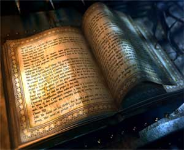
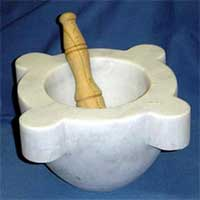

REGOLE GENERALI PER LA PRODUZIONE DEGLI INCANTAMENTI MINORI
Gli incantamenti magici minori possono essere creati dai chierici di Eram a partire dal raggiungimento di un livello minimo che varia al variare della potenza dell'incantamento minore come previsto nella seguente tabella:
|
POTENZA DELL'INCANTAMENTO |
LIVELLO RICHIESTO |
| Least Minor Enchantment | 3° livello di esperienza |
| Lesser Minor Enchantment | 4° livello di esperienza |
| Minor Enchantment | 5° livello di esperienza |
| Superior Minor Enchantment | 6° livello di esperienza |
| Greater Minor Enchantment | 7° livello di esperienza |
REGOLE SPECIFICHE PER PRODURRE INCANTAMENTI MINORI DI ERAM
1) I LIBRI SACRI DI ERAM :
|
 |
I chierici di Eram che
desiderano creare incantamenti magici minori devono possedere i libri sacri
contenenti le preghiere alla loro divinità. I libri sacri sono oggetti personali
di ogni chierico. Per poter produrre un qualsiasi tipo di incantamento minore il
chierico deve possedere i volumi di quella che viene chiamata la
Libreria delle Sacre Onde. |
2) LA SALA DEL TENTACOLO :

I chierici di Eram che
desiderano creare incantamenti magici minori devono poter operare nella Sala del
Tentacolo, luogo rituale
La Sala del Tentacolo rappresenta il luogo centrale e principale di ogni tempio di Eram. Presso questa sala vengono svolti i principali riti del culto. Inoltre questa sala è utilizzata dai chierici per la produzione degli incantamenti minori. In tutta la fase di produzione, infatti, il chierico deve operare (e gli oggetti devono rimanere) all'interno di uno dei sette piccoli cerchi laterali. Solo in questo modo l'oggetto assorbirà il potere della divinità.
3) OGGETTI SACRI SUPPLEMENTARI :
Per la produzione di alcuni specifici oggetti magici minori, inoltre, il chierico deve disporre di alcuni specifici oggetti sacri. Si tratta di oggetti personali di ogni chierico. Possedere questi oggetti sacri rientra nella pratica del culto della divinità. Per tale motivo il chierico che acquista tali libri riceverà un ammontare di punti esperienza bonus pari a 250 punti esperienza per ogni oggetto sacro acquistato. Occorre osservare che il chierico acquisirà i punti esperienza solo dopo aver raggiunto il terzo livello di esperienza. Si noti che questi punti esperienza saranno applicati unicamente al personaggio ed in nessuna misura ai punti partenza e che, di ruolo, il chierico eviterà in ogni modo di disfarsi dei suoi oggetti sacri che dovrà custodire gelosamente (qualora li venda o li regali costui potrà essere penalizzato dal Dungeon Master).
|
 |
IL MORTAIO DELLE CONCHIGLIE |
4) TEMPO DI PRODUZIONE : Il tempo di produzione minimo di un incantamento minore dipende dal tipo di incantamento ed è espresso nella seguente tabella. Il chierico può dedicare più o meno tempo alla produzione di un incantamento minore, rispettivamente migliorando o peggiorando le proprie possibilità di successo. In ogni caso non occorre che il chierico effettui i giorni di lavoro consecutivamente ben potendo sospendere il lavoro quando desidera per poi riprenderlo successivamente.
| TIPOLOGIA DI INCANTAMENTO |
LIVELLO DI ESPERIENZA DEL CHIERICO DI Eram |
|||||
| 3° LIVELLO | 4° LIVELLO | 5° LIVELLO | 6° LIVELLO | 7° LIVELLO | 8+° LIVELLO | |
| Pergamena di Eram | 20 | 18 | 15 | 12 | 10 | 8 |
| Seaweed Healing Pack | 20 | 18 | 15 | 12 | 10 | 8 |
| Waterproof Chest | -- | 30 | 27 | 24 | 22 | 20 |
| Salt of Life | -- | -- | 40 | 37 | 34 | 31 |
| Weapon of Salt Conjuration | -- | -- | 40 | 37 | 34 | 31 |
| Holy Pearl of Light | -- | -- | -- | 54 | 51 | 48 |
| Bowl of the Holy Soup | -- | -- | -- | 57 | 54 | 51 |
| Lesser Seaweeds of Entanglement | -- | -- | -- | 57 | 54 | 51 |
| Net of Entrapment | -- | -- | -- | -- | 90 | 87 |
| Helm of Fish Predator | -- | -- | -- | -- | 93 | 90 |
| Amulet of Fish Protection | -- | -- | -- | -- | 96 | 93 |
5) COSTI DI PRODUZIONE : Per la produzione di un incantamento minore il chierico deve utilizzare un ammontare di reagenti e polveri magiche pari ad un determinato ammontare del valore finale dell'incantamento. Il chierico può decidere di utilizzare componenti magici in misura ridotta, normale od abbondante. Questa scelta di ripercuoterà sulle % di successo dello stesso nella produzione dell'oggetto magico, come in seguito specificato.
|
AMMONTARE DI REAGENTI |
% DEL VALORE FINALE |
| Componenti magici in misura ridotta | 20 % |
| Componenti magici in misura comune | 25 % |
| Componenti magici in misura abbondante | 30 % |
6) PERCENTUALE DI SUCCESSO : Al termine dei giorni di lavoro il chierico potrà tirare un dado percentuale per verificare se la creazione dell'oggetto ha avuto successo. Qualora il tiro del dado dia un risultato negativo, il chierico avrà perso tempo e denaro (costi di produzione) e non avrà incantato l'oggetto. Il chierico, però, potrà in futuro ripetere il procedimento al fine di incantamento con lo stesso incantamento minore il medesimo oggetto. In questo caso, il chierico impiegherà solo la metà del tempo e delle risorse richieste dal procedimento prescelto ottenendo un bonus alla percentuale di successo pari al +5% cumulativo fino ad un bonus massimo del +15%. In nessun caso il chierico potrà ottenere una percentuale di successo superiore al 95%, risultando un risultato da 96 a 100 sempre in un fallimento critico. In caso di fallimento critico il personaggio non potrà più provare ad incantare quel singolo oggetto con quel determinato incantamento minore. Con un tiro naturale da 01 a 05, invece, si verificherà un successo critico. In caso di successo critico il procedimento di incantamento sarà riuscito ed il chierico avrà anche risparmiato il 10% dell'ammontare di reagenti magici.
|
POTENZA DELL'INCANTAMENTO |
% BASE DI SUCCESSO |
| Least Minor Enchantment | 33 % |
| Lesser Minor Enchantment | 30 % |
| Minor Enchantment | 27 % |
| Superior Minor Enchantment | 24 % |
| Greater Minor Enchantment | 21 % |
|
LIVELLO DI ESPERIENZA DEL MAGO |
MODIFICATORE % |
| Per ogni livello di esperienza raggiunto | + 1 % |
| Per ogni superiore grado di potenza di minor enchantment che il chierico è potenzialmente in grado di produrre rispetto a quello che sta producendo * | + 5 % (max +20%) |
|
COMPETENZE POSSEDUTE |
MODIFICATORE % |
| Se il chierico riesce in una prova in Ceremony | +5% (+10% successo criico, -5% fallimento critico) |
| Se il chierico riesce in una prova in Religion | +3% (+6% successo criico, -3% fallimento critico) |
|
TEMPO DI PRODUZIONE |
MODIFICATORE % |
| Riduzione del tempo di produzione * | - 5 % |
| Tempo di produzione base | nessuno |
| Aumento del tempo di produzione * | + 5 % |
|
AMMONTARE DI REAGENTI |
MODIFICATORE % |
| Componenti magici in misura ridotta | - 5 % |
| Componenti magici in misura comune | nessuno |
| Componenti magici in misura abbondante | + 5 % |
|
ADORATRICE DELLA LUNA |
MODIFICATORE % |
| Per l'utilizzo di una Sacra Perla di Eram | + 10% (una sola utilizzabile per tentativo) |
| * Questo bonus cumulativo si aggiunge a quello generico dovuto all'esperienza del chierico. Per determinare l'ammontare di questo bonus occorre determinare quanti incantamenti di potenza superiore il chierico sarebbe potenzialmente in grado di creare per il livello di esperienza raggiunto. Per ogni incantamento di potenza superiore al quale il chierico ha potenzialmente accesso costui riceve un bonus cumulativo del +5%. Qualora, ad esempio, un chierico di 8° livello si cimentasse a creare un Lesser Minor Enchantment costui otterrebbe per il suo livello di esperienza un bonus base di +8 oltre ad un bonus di +15 per essere in grado di produrre incantamenti di tre potenze superiori. Se, invece, lo stesso chierico si cimentasse a creare un Minor Enchantment costui otterrebbe per il suo livello di esperienza un bonus base di +8 oltre ad un bonus di +10 per essere in grado di produrre incantamenti di tre potenze superiori. |
| * L'ammontare di giorni di differenza in caso di riduzione od aumento dei tempi di produzione sarà pari a due giorni per potenza di incantamento come indicato nella seguente tabella (tale riduzione/incremento potrà essere operato un'unica volta): |
|
POTENZA DELL'INCANTAMENTO |
GIORNI OPZIONALI |
| Least Minor Enchantment | 2 giorni |
| Lesser Minor Enchantment | 4 giorni |
| Minor Enchantment | 6 giorni |
| Superior Minor Enchantment | 8 giorni |
| Greater Minor Enchantment | 10 giorni |
6 bis) MODIFICHE SPECIFICHE PER TIPOLOGIA DI INCANTAMENTO
| Seaweed Healing Pack |
|
MODIFICATORI SPECIFICI |
MODIFICATORE % |
| Se il chierico riesce in una prova nella competenza Herbalism | +3% (+6% successo criico, -3% fallimento critico) |
| Se il chierico riesce in una prova nella competenza Sage Knowledge-Herbalism | +5% (+10% successo criico, -10% fallimento critico) |
| Se il chierico utilizza una dose di Padina Curativa | +3% |
| Se il chierico utilizza una dose di Nori Energetica | +3% |
| Bowl of the Holy Soup |
| Amulet of Fish Protection |
|
MODIFICATORI SPECIFICI |
MODIFICATORE % |
| Se è utilizzata una ciotola od un amuleto dal valore di almeno 250 g.p. | +5% |
| Weapon of Salt Conjuration |
| Lesser Seaweeds of Entanglement |
|
MODIFICATORI SPECIFICI |
MODIFICATORE % |
| Arma di comune qualità | - 9 % |
| Arma di buona qualità | - 6 % |
| Arma di eccellente qualità | - 3 % |
| Arma di superba qualità | nessuno |
| Arma magica con incantamento maggiore | +5 % |
| Utilizzo di un'arma rituale del culto di Eram* | +5 % |
|
* Per arma rituale del culto di
Eram si intende un'arma costruita parzialmente in madreperla (solitamente parte dell'elsa
o l'impugnatura) mentre
le restanti parti devono essere abbellite
con incisioni raffiguranti tematiche marine. Costruire una tale arma implica i
seguenti modificatori: -1 alla prova di produzione +25% dei costi e dei tempi di produzione (per eccesso) +33% del valore finale dell'arma + costo fisso supplementare per la madreperla (50 monete d'oro armi small; 100 monete d'oro armi medium e 150 monete d'oro armi large). |
7) PUNTI ESPERIENZA
Qualora il chierico riesca nella creazione di un incantamento minore costui
riceverà, la prima volta che
riesce nella costruzione di un tipo specifico di oggetto magico, punti
esperienza pari al 100% di quelli dell'incantamento, mentre le
volte successive, punti esperienza pari al 50% di quelli
dell'incantamento che ha creato. Ogni volta che, invece, costui
porti a compimento il tentativo senza riuscire ad incantare l'oggetto riceverà
un ammontare di punti esperienza pari al 25% di quelli
dell'incantamento minore che ha provato a creare. Si noti che questi punti
esperienza saranno applicati unicamente al personaggio ed in nessuna misura ai
punti partenza.
Un chierico di Eram che, avendo raggiunto l'ottavo livello di esperienza, sia
riuscito nella creazione di un incantamento minore per categoria di potenza
otterrà un bonus costante del
+2% ogni volta che ottiene punti esperienza fino
a che resterà in possesso di tutti i tomi sacri necessari alla creazione degli
oggetti magici minori. Si noti che questo bonus è applicato unicamente ai punti
esperienza del personaggio e non ai punti partenza del giocatore. Inoltre,
questo bonus si applica solo ai punti esperienza acquisiti dal personaggio nel
corso delle sedute di gioco e
non incide nei punti esperienza calcolati in fase di
creazione del personaggio.